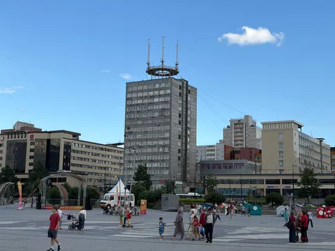
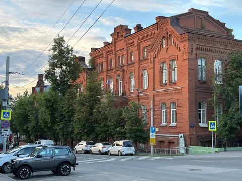
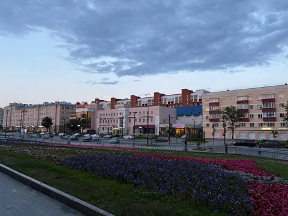
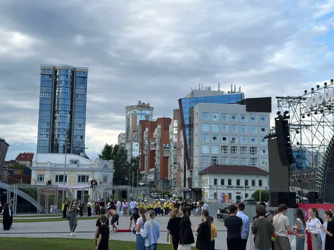

Город так-то классный. Погулять приятно и интересно. Много хорошего и красивого. Много в нем делают к лучшему. Но не хватает ему какой-то целостности образа. Есть некоторая разница между «эклектикой» и «наляпано».
Жена, которая больше понимает в градостроении, назвала это стихийным саморазвитием (москомархитектуры на них нет!). Я назову это лоскутной реконструкцией. Сюда смотришь - а вроде хорошо. Туда - советское уныние, надо бы переделать. Там - переделали, но лучше бы не трогали. В каждом «кадре», откуда и куда не смотри, обязательно будет что-то уродливое. Но город движется в верном направлении, и, уверен, через несколько лет будет еще лучше.
P.S. добавлю все же несколько гастро-рекомендаций, вдруг кому-то пригодится:
- Екат: Огниво (европа, фьюжн, авторская);
- Челябинск: Редактор (русско-французская);
- Уфа: Номадес (франзузская, фьюжн);
- Пермь: Чӧскыт керку (коми-пермяцкая).
(Конечно же, почти все эти места найдены благодаря Ultima guide Яндекс Еды, ну а как еще)



